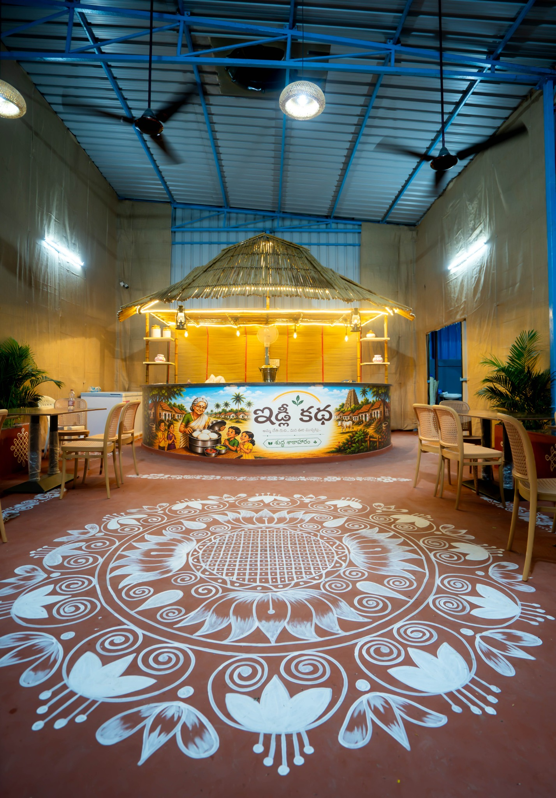
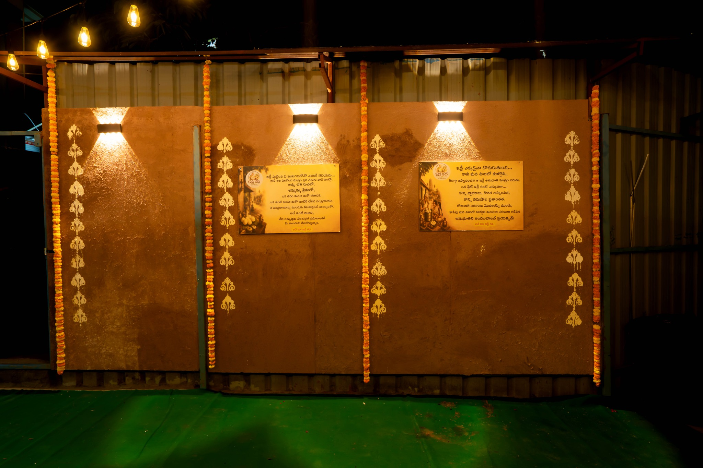
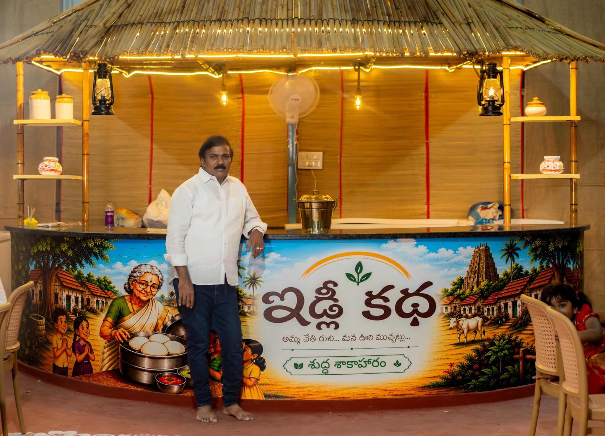
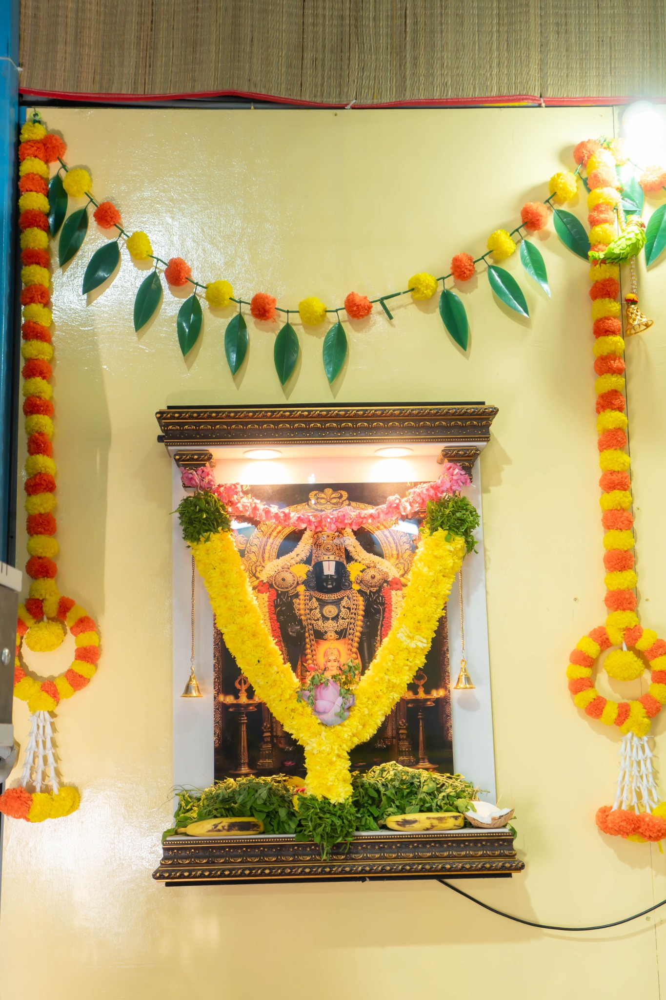
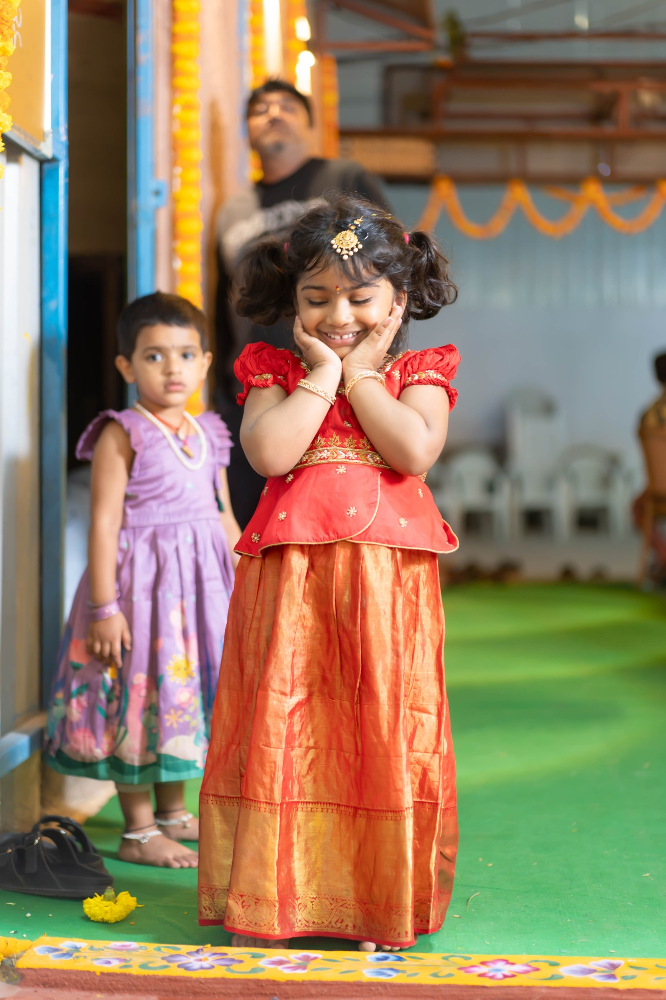

అమ్మ చేతి రుచి...
మన ఊరి ముచ్చట్లు...
Authentic home-style heritage tiffins, steamed fresh every morning with pure ghee, traditional chutneys and the feeling of an Andhra village kitchen.

Thatched hut counter · warm lamps · village-inspired courtyard
ఇడ్లీ కథ · TRADITIONAL SOUTH INDIAN TIFFIN
Where Village Nostalgia Meets
Uncompromised Quality
Idly Katha brings the warmth of a village morning to Kukatpally — earthy interiors, marigold garlands, brass details, warm lights and the familiar comfort of breakfast made with care.
Village Courtyard Dining Ambience
Real photographs from Idly Katha — your actual space, shown as the visual story of the site.








Loved by Breakfast Aficionados
Warm words, village vibes and the joy of a satisfying South Indian breakfast.
“Beautiful ambience and the food feels homemade. The village theme is really special.”
Breakfast guest“The hut counter, lamps and traditional details make the place memorable. Good morning stop.”
Local guest“Loved the idly and dosa. Simple menu, clean presentation and a warm family feel.”
Family guestVisit Us at Kukatpally
Come hungry, leave happy. Your village-style breakfast morning starts here.
Service Timings · సమయాలు
Evening · 6:00 PM – 10:00 PM